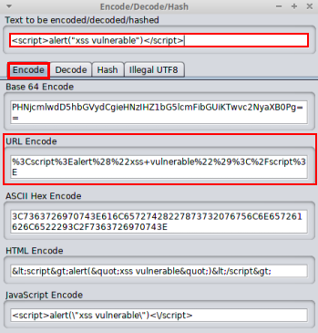

ZAP
ZAP->Tools->Encode/Decode/Hash
Encode:
<script>alert("xss vulnerable")</script> Payload:
<script>alert("xss vulnerable")</script>Result:
%3Cscript%3Ealert%28%22xss+vulnerable%22%29%3C%2Fscript%3EAs can be seen from the payload,
unlike Burp, which URL encoded every single character provided, ZAP only appears to URL encode the characters the tool considers to be unsafe.